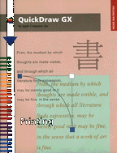

Legacy Document
Important: The information in this document is obsolete and should not be used for new development.
Important: The information in this document is obsolete and should not be used for new development.
QuickDraw GX Printing
Inside Macintosh: QuickDraw GX Printing shows you how to implement printing in the QuickDraw GX environment. This book exps how to support printing-related dialog boxes and events, implement a print loop, customize printing features, and more.Before reading this book, you need to be familiar with the general concepts of QuickDraw GX, as described in Inside Macintosh: QuickDraw GX Objects.
Inside Macintosh: QuickDraw GX Printing starts by introducing the basiccepts you need to implment QuickDraw GX printing features in your applications. The book then describes
For information on printing extensions or printer drivers, see Inside Macintosh: QuickDraw GX Printing Extensions and Drivers. For more information on translating QuickDraw data to data suitable for printing in a QuickDraw GX-aware application, see Inside Macintosh: QuickDraw GX Environment and Utilities.
- color printing features, which define the minimum feature set that you must support
- page formatting and dialog box customization
- advanced printing features, which allow you to implement advanced customization
Availability: Click below to obtain Inside Macintosh: QuickDraw GX Printing Extensions and Drivers in any of the following formats.
Acrobat (3909K)